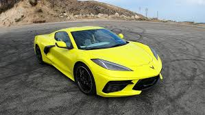

The Chevrolet Corvette is a line of American two-door, two-seater sports cars manufactured and marketed by General Motors under the Chevrolet marque since 1953.[1][2] Throughout eight generations, indicated sequentially as C1 to C8, the Corvette is noted for its performance, distinctive styling, lightweight fiberglass or composite bodywork, and competitive pricing. The Corvette has had domestic mass-produced two-seater competitors fielded by American Motors, Ford, and Chrysler; it is the only one continuously produced by a United States auto manufacturer.[3] It serves as Chevrolet's halo car.[4] Since its introduction in 1953, the two-seater has steadily moved upmarket. Initially, a relatively modest, lightweight 6‑cylinder convertible, subsequent introductions of V8 engines, competitive chassis innovations, and rear mid-engined layout have positioned the Corvette in the supercar class. The first three Corvette generations (1953–1983) employed body-on-frame construction, and since the C4 generation, introduced in 1983 as an early 1984 model, Corvettes have used GM's unibody Y‑body platform.[5] All Corvettes used front mid-engine configuration for seven generations, through 2019, and transitioned to a rear mid-engined layout with the C8 generation.[6] In 1953, GM executives accepted a suggestion by Myron Scott, then the assistant director of the Public Relations department, to name the company's new sports car after the corvette, a small, maneuverable warship.[7] The first model, a convertible, was introduced at the 1953 GM Motorama as a concept car; production models went on sale later that year. In 1963, the second generation was introduced in coupe and convertible styles. Initially manufactured in Flint, Michigan, and St. Louis, Missouri, the Corvette has been produced in Bowling Green, Kentucky, since 1981, which is also the location of the National Corvette Museum. The Corvette has become widely known as "America's Sports Car."[8] Automotive News wrote that after being featured in the early 1960s television show Route 66, "the Corvette became synonymous with freedom and adventure," ultimately becoming both "the most successful concept car in history and the most popular sports car in history."[9]
